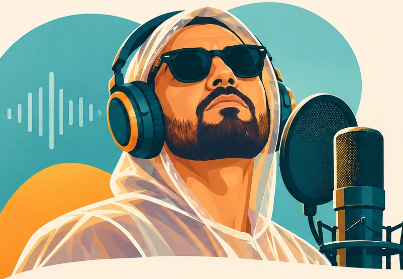
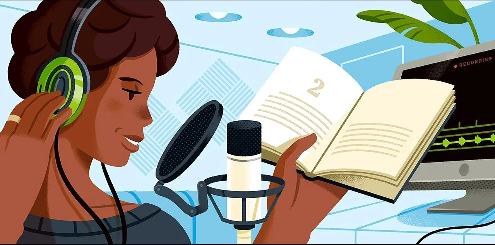
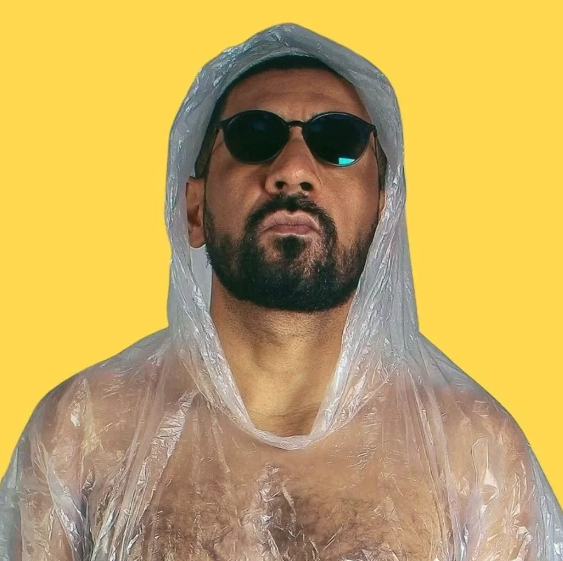

VOZ, HISTÓRIAS & IDEIASLOCUTOR · ATOR · NARRADOR · TREINADOR
Marcelo
Nascimento.
A voz certa para dar vida à sua mensagem.
Da sutileza de uma história à energia de um grande evento. Técnica, interpretação e personalidade para sua ideia ser ouvida.
Assistir às aberturas de shows e eventosrádio e internet Vozes CaricatasPersonagens, humor
e interpretação AudiolivrosNarração envolvente
e sensível Shows e EventosAberturas e grandes
momentos TreinamentoCursos, workshops
e ebooks
01 / TRABALHOS SELECIONADOS
Uma voz. Muitas histórias.
Um recorte do meu trabalho para marcas, emissoras e projetos de diferentes formatos.
O trabalho
fala por si.
Ouça a voz em ação, em uma seleção de projetos recentes. Sem reprodução automática: você decide quando dar o play.
02 / VOZES CARICATAS
Outra voz.
Outro universo.
Personagens, humor, exagero e surpresa. A voz também pode brincar, provocar e criar mundos inteiros.
Explorar todas as vozes ↗03 / AUDIOLIVROS
Histórias que
ganham vida.
Narrar é mais do que ler. É transformar cada frase em ritmo, intenção, pausa e presença. Ouça diferentes estilos de interpretação em uma seleção de amostras.

ESCUTE MEU TRABALHO
Um livro, muitas vozes.
Seleção de trechos no SoundCloud. Cada player é independente: escolha o que deseja ouvir.
04 / SHOWS & EVENTOS
Quando as luzes se acendem,
a voz entra em cena.
Mais de 200 aberturas de shows e eventos. Aqui, seis exemplos para assistir sem sair do site.
6 VÍDEOS · REPRODUÇÃO INDIVIDUAL05 / TREINAMENTO PARA LOCUTORES
Conhecimento
que encontra a voz.
Workshops, cursos e ebooks: técnica, prática e ciência da comunicação para quem quer desenvolver sua expressão.

06 / SOBRE MARCELO
Presença,
interpretação
e experiência.
Atuo na comunicação desde 1998. Sou locutor, ator, narrador e produtor de conteúdo, com experiência em rádio, televisão, publicidade, audiolivros e grandes eventos.
Minha formação une Comunicação Social, Artes Cênicas, Marketing e Neurociência do Consumidor. Essa combinação dá forma a um trabalho em que a técnica serve à emoção — e à mensagem.
07 / CONTATO
Tem uma boa ideia?
Vamos dar voz a ela.
Conte um pouco sobre seu projeto. Vamos conversar sobre formato, linguagem, prazo e possibilidades.